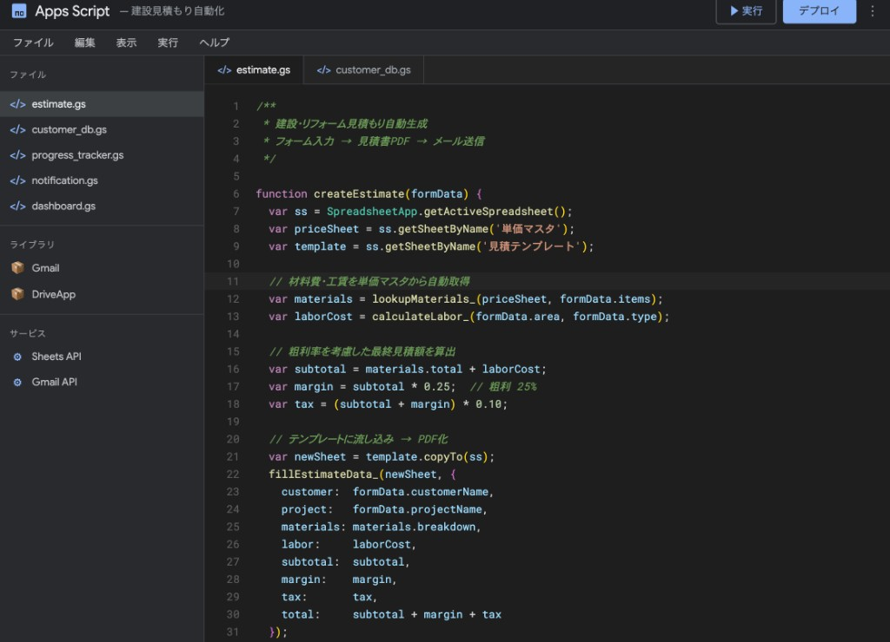
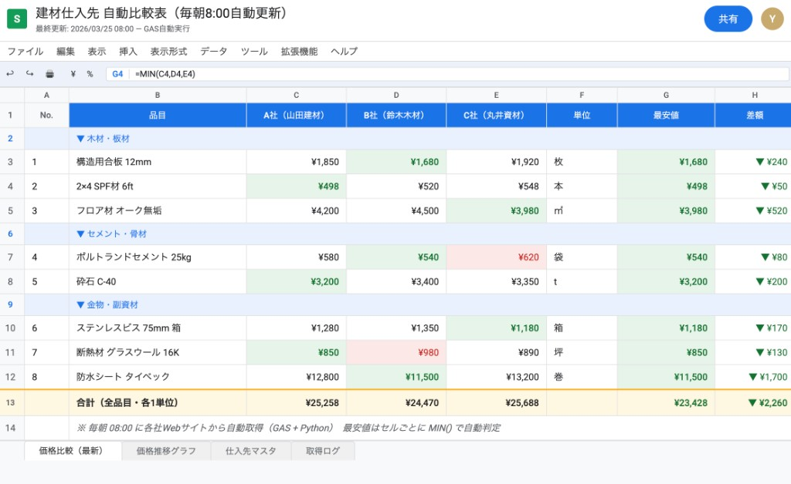
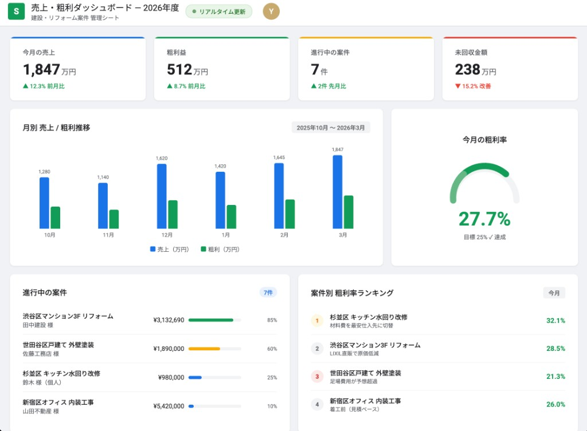

見積もり・現場管理・顧客対応——
アナログな業務が多い建設・リフォーム業だからこそ、
自動化の余地が大きい。
W-Flowは、現場を知る視点で設計します。

実装イメージ GAS で見積テンプレ・PDF・メール送信までを一気通貫で組みます。
アナログな慣習が多い業界だからこそ、少し仕組みを変えるだけで大きく変わります。
同じような見積もりを毎回ゼロから作成。材料費の計算ミス、単価の更新漏れが発生しやすい。
過去の施工履歴・連絡先・要望が社長の頭の中だけ。担当者が変わると引き継げない。
相場確認のためにWebを手動で巡回。時間がかかるうえに比較が難しい。
竣工報告書・工程表・請求書を毎回手作り。現場から戻ってからの事務作業が重い。
LINEやメモで職人とやりとり。どの現場が今どの段階かが一目でわからない。
月末にならないと数字がわからない。案件ごとの利益率も感覚頼り。
ストック写真ではなく、スプレッドシートとダッシュボードで「どう楽になるか」を具体的にイメージできます。


PythonとGASを使い、建設・リフォーム業の現場に合った仕組みをゼロから設計します。
材料・工賃・粗利率を入力するだけで見積書が自動生成。PDFで即出力、メール添付まで自動化可能。
GAS / Excel / PDF顧客情報・施工履歴・写真・連絡記録をスプレッドシートで管理。誰でも検索・参照できる状態に。
GAS / スプレッドシート主要ECサイトや業者サイトの価格を毎朝自動取得。比較表を自動更新して発注判断を効率化。
Python / スクレイピングフォームに入力するだけで工程表・竣工報告書・請求書を自動作成。事務作業を大幅削減。
GAS / Word / PDF案件ごとの売上・原価・粗利率をリアルタイムで可視化。月次・年次レポートも自動集計。
GAS / スプレッドシート口頭でしか伝わっていない業務手順を図解・動画付きで整備。属人化を解消し、採用・引き継ぎを楽に。
SOP / マニュアル設計「終始とても親切丁寧に対応いただきました。予定されていた納品予定日よりもかなり早く納品していただき、また資料も細部まで丁寧に作成されており本当に大満足でした！」
「自動化ツールの作成まで迅速、丁寧にご対応いただきました。またご一緒させていただきたいです。大変満足しております。」
「納期よりも早く、丁寧にやりとりいただけました。イメージしていた通りのデータを提出いただいて助かりました。」
すべて無料でヒアリング・お見積りします。まず話を聞くだけでも大丈夫です。
LINEまたはZoomで現状の課題をお聞きします。1時間程度。
課題に合った解決策と費用・納期をご提案します。無料。
承認後、開発を開始。進捗は随時ご報告します。
納品後1週間はサポート対応。運用定着まで伴走します。
「こんなこと頼めるの？」という段階でも大丈夫です。
建設・リフォーム業の業務改善、一緒に考えます。
✓ 見積り無料 ✓ 24時間以内返信 ✓ 断っても大丈夫です